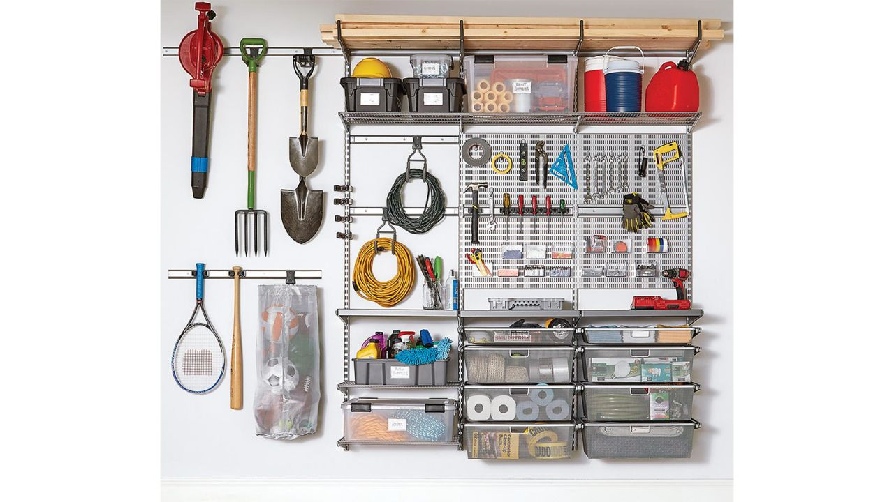
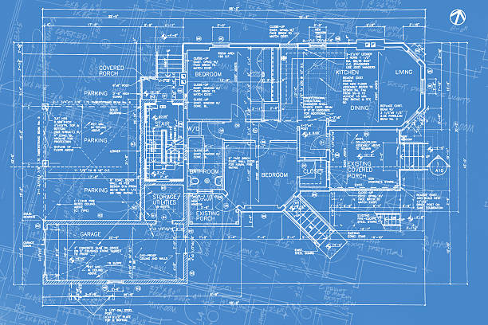
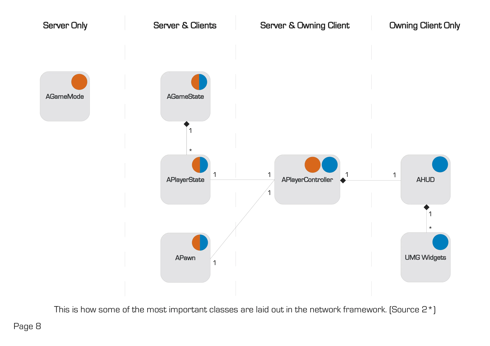

Vizzio
Introduction to Unreal Engine's Architecture
Author : YangPurpoes of this Presentation
Learn how to use the correct tools
ALERT !!!
These topics should only be consumed by people with a base understanding of the Singleplayer Game Framework of Unreal Engine
This presentation will not cover how to use Unreal Engine as a beginner
History of Unreal Engine
From UDK era
Unreal Engine's Basic Architecture
Building Blueprint sample
Unreal's Relationship Architecture
Unreal's Structure
Firstly. Things I would suggest stop using
Source code of Get All Actor
void UGameplayStatics::GetAllActorsOfClass(const UObject* WorldContextObject, TSubclassOf ActorClass, TArray& OutActors)
{
QUICK_SCOPE_CYCLE_COUNTER(UGameplayStatics_GetAllActorsOfClass);
OutActors.Reset();
// We do nothing if no is class provided, rather than giving ALL actors!
if (ActorClass)
{
if (UWorld* World = GEngine->GetWorldFromContextObject(WorldContextObject, EGetWorldErrorMode::LogAndReturnNull))
{
for (TActorIterator It(World, ActorClass); It; ++It)
{
AActor* Actor = *It;
OutActors.Add(Actor);
}
}
}
}